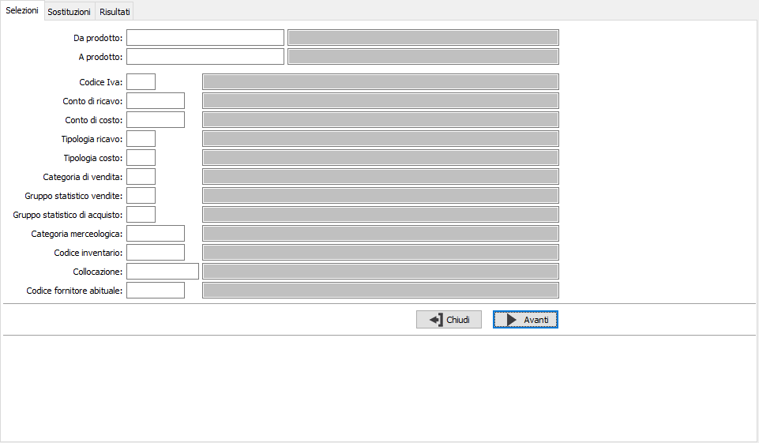
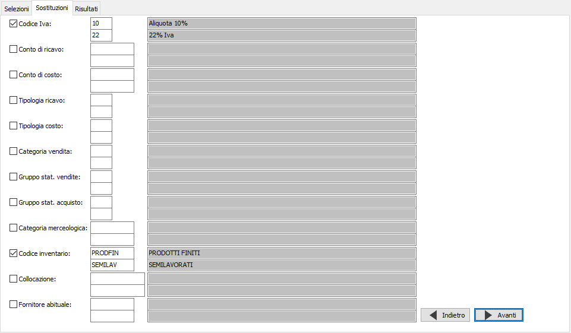
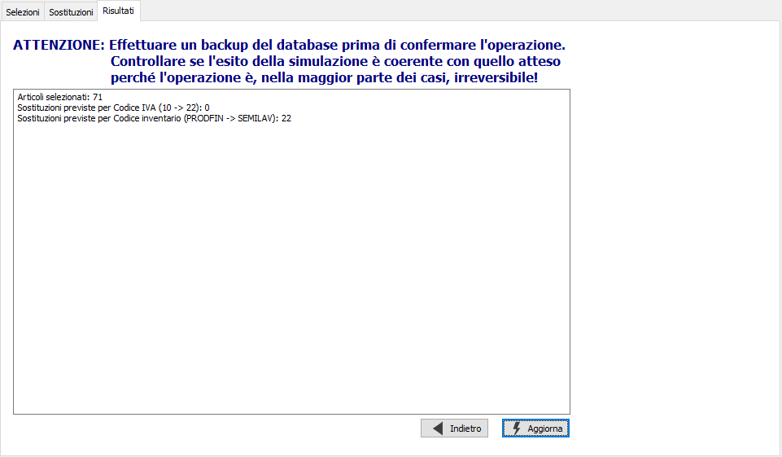

Aggiornamento rapido articoli
Il programma di servizio consente l’aggiornamento selettivo dell’anagrafica articoli, permettendo l’aggiornamento guidato di più campi (aliquota Iva, conto di ricavo, conto di costo, tipologia ricavo, tipologia costo, categoria vendita, gruppo statistico di vendita e di acquisto, categoria merceologica, codice inventario, fornitore abituale).
La pagina di Selezione contiene i criteri di selezione da utilizzare per individuare i prodotti da aggiornare; premendo Avanti si accede alla pagina successiva.

La pagina di sostituzioni consente di selezionare mediante la spunta i campi da modificare all'interno degli articoli selezionati; è sempre richiesto il vecchio codice, da sostituire, ed il nuovo codice; premendo Avanti si accede alla pagina successiva.

La pagina Risultati riepiloga il numero dei prodotti selezionati in base ai criteri della prima pagina, le sostituzioni che saranno operate e su quanti prodotti; premendo Aggiorna si effettua la registrazione definitiva previa richiesta di conferma.
